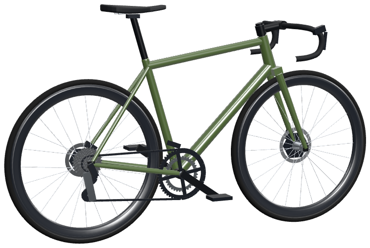

Scroll and the bike builds itself from its size-56 geometry chart, part by part, each tube placed to the millimetre.

700c rims on a 622 mm bead seat, 24 spokes each: radial at the front, two-cross at the rear, where the pedalling torque goes.